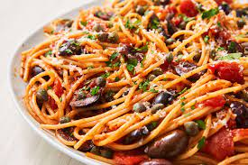

Puttanesca Recipe!

Description
A pasta sauce typically including tomatoes, garlic, olives, and anchovies.
Ingredients
- Tomatoes
- Garlic
- Olives
- Anchovies
- Pasta
Steps:
-
Heat the oil in a non-stick pan over a medium-low heat. Add the onion
along with a generous pinch of salt and fry for 10 mins, or until soft.
Add the garlic and chilli, if using, and cook for a further minute.
-
Stir the tomatoes, anchovies, olives and capers into the onion, bring to
a gentle simmer and cook, uncovered, for 15 mins. Season to taste.
-
Meanwhile, bring a large pan of salted water to the boil. Cook the
spaghetti following pack instructions, then drain and toss with the
sauce and parsley.